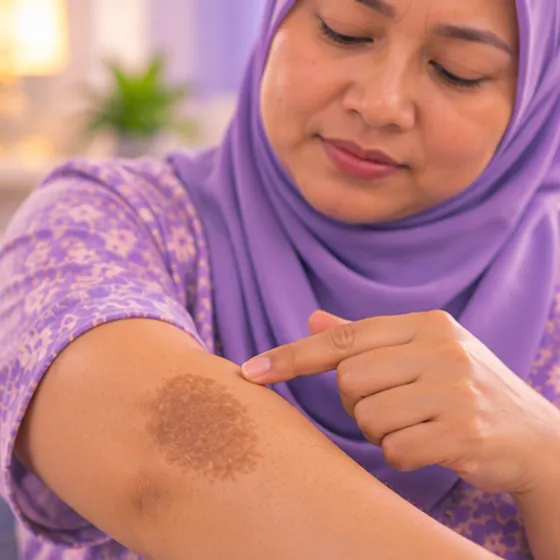

Hiperpigmentasi (tompok gelap pada kulit)
Tompok kulit yang kelihatan lebih gelap daripada kulit di sekelilingnya
Apa itu
Hiperpigmentasi bermaksud sesetengah kawasan kulit menghasilkan warna (melanin) yang berlebihan dan kelihatan lebih gelap. Ia sering disebabkan oleh matahari, kesan selepas jerawat atau kecederaan, atau perubahan hormon, dan biasanya tidak berbahaya.
- Muka, tangan atau kulit lain
- Matahari, hormon, kesan lama
- Tompok rata perang atau gelap
- Jumpa doktor
- Doktor keluarga atau pakar kulit (dermatologi)
- Biasa pada
- Sesiapa sahaja; lebih kerap pada kulit gelap dan wanita dengan perubahan hormon
- Berjangkit
- Tidak
- Perjalanan
- Sering pudar perlahan dalam beberapa bulan, tetapi matahari boleh menggelapkannya semula
Tanda biasa

Tompok kulit lebih gelapTompok hiperpigmentasi 
Tompok gelap di mukaHiperpigmentasi
Jenis tompok gelap

Jeragat: titik kecil rata, kebanyakannya keturunan, lebih gelap di bawah matahari 
Tompok matahari: tompok perang selepas selaran atau banyak terdedah matahari 
Melasma: tompok perang yang sama pada kedua-dua pipi, berkaitan hormon 
Kesan selepas radang: kesan gelap selepas jerawat, luka atau iritasi 
Tompok usia: tompok bulat dengan tepi jelas pada usia pertengahan dan tua 
Tompok dalam (dermis): titik kelabu-perang pada tulang pipi Tompok campuran: beberapa jenis bersama, selalunya selepas rawatan yang salah
Bagaimana tompok gelap terbentuk
Tompok terbentuk apabila kulit menghasilkan pigmen lebih cepat daripada ia memperbaharui diri. Perlindungan matahari setiap hari ialah penjagaan paling penting.
Bukan tompok pigmen: jumpa doktor
- Tahi lalat yang membesar atau berubah warna
- Tompok dengan tepi tidak sekata, timbul atau berdarah
Teruskan mengambil ubat biasa anda dan terus berjumpa doktor. Sesi kami ialah sokongan lembut dan tidak menggantikan rawatan perubatan.
Tanda-tanda lain
- Bintik gelap kecil di bahagian kulit yang banyak terdedah kepada matahari, seperti muka, tangan dan lengan
- Kesan gelap yang kekal selepas jerawat, gigitan, ruam atau luka hilang
- Biasanya tidak sakit atau gatal; kulit terasa biasa apabila disentuh
Mengapa ia berlaku

Terlalu banyak matahariPendedahan ultraungu 
Perubahan hormonPerubahan hormon 
Gula atau tekanan darah tinggiFaktor risiko metabolik
Punca lain
- Kesan selepas keradangan kulit, seperti jerawat, ekzema, gigitan serangga, luka atau melecur
- Sesetengah ubat, produk kulit atau tumbuhan yang menjadikan kulit lebih sensitif kepada matahari
Jumpa doktor dahulu jika
- Bintik gelap yang membesar, berubah bentuk atau warna, gatal, berdarah atau menjadi luka: jumpa doktor segera
- Garis gelap di bawah kuku yang bukan akibat kecederaan, atau yang semakin meluas
- Tompok gelap yang tebal dan berbeludu di leher, ketiak atau pangkal peha: mungkin berkaitan masalah gula darah
- Kulit menggelap di seluruh badan disertai keletihan, penurunan berat badan atau pening
- Tompok muncul selepas ubat atau produk kulit baru: tanya doktor atau ahli farmasi, jangan berhenti ubat sendiri
- Tompok yang terus merebak, tidak pudar selepas beberapa bulan menjaga daripada matahari, atau menyusahkan anda: berbincang dengan doktor
Jika mana-mana berkenaan, sila jumpa doktor sebelum sesi.
Halaman ini ialah maklumat am. Sila terus mengambil ubat biasa anda dan terus berjumpa doktor.
Teruskan mengambil ubat biasa anda dan terus berjumpa doktor. Sesi kami ialah sokongan lembut dan tidak menggantikan rawatan perubatan.
Menjaga diri

Lindungi diri dari matahariPerlindungan matahari 
Jangan picit atau korekJangan sentuh 
Tanya ahli farmasiNasihat ahli farmasi
Lebih banyak cara menjaga diri
- Berlembut dengan kulit: elakkan skrub kasar dan produk pengelupas yang kuat
- Elakkan krim pemutih kulit yang tidak dipreskripsikan atau diluluskan; sesetengahnya mengandungi bahan berbahaya
Beritahu ahli terapi anda
- Kulit luka, merah atau sakit
- Diabetes atau deria kulit berkurang
- Kehamilan
Ahli terapi anda akan menyemaknya bersama anda sebelum bermula.
Soalan dan jawapan
Apakah Hiperpigmentasi (tompok gelap pada kulit)?
Tompok kulit yang kelihatan lebih gelap daripada kulit di sekelilingnya. Hiperpigmentasi bermaksud sesetengah kawasan kulit menghasilkan warna (melanin) yang berlebihan dan kelihatan lebih gelap. Ia sering disebabkan oleh matahari, kesan selepas jerawat atau kecederaan, atau perubahan hormon, dan biasanya tidak berbahaya.
Apakah tanda biasa Hiperpigmentasi (tompok gelap pada kulit)?
Tompok kulit lebih gelap · Tompok gelap di muka
Mengapa Hiperpigmentasi (tompok gelap pada kulit) berlaku?
Terlalu banyak matahari · Perubahan hormon · Gula atau tekanan darah tinggi
Bagaimana menjaga diri dengan Hiperpigmentasi (tompok gelap pada kulit)?
Lindungi diri dari matahari · Jangan picit atau korek · Tanya ahli farmasi
Bolehkah sesi AI Body Master membantu Hiperpigmentasi (tompok gelap pada kulit)?
Sesi ialah sokongan meridian tanpa jarum yang lembut untuk kesejahteraan anda. Ia tidak merawat atau menyembuhkan Hiperpigmentasi (tompok gelap pada kulit) dan tidak menggantikan ubat atau doktor anda. Beritahu ahli terapi anda sebelum sesi bermula.
Keadaan berkaitan
- Vitiligo
- Vitiligo (sopak)
- Albinisme
- Pitiriasis alba (tompok pucat bersisik)
- Dermatitis seboroik (ruam jenis kelemumur)
- Piebaldisme
- Ruam makulopapular
- Keguguran rambut bertompok (alopesia areata)
- Gangguan menarik rambut (trikotilomania)
- Tifus
- Purpura fulminans
- Keratolisis eksfoliativa (tapak tangan/kaki mengelupas)
Rujukan: General information based on public health sources such as Mayo Clinic, NHS, Cleveland Clinic and NCBI StatPearls.
Halaman dikemas kini: 2026-11-01